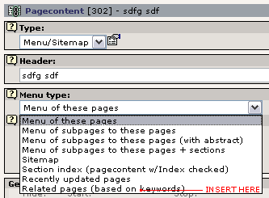
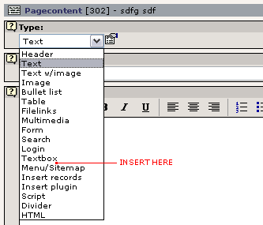

[English]
Most frontend plugins should be added to the Plugin list of Content Element type 'Insert Plugin'. This is what happens with most other plugins you know of.
Add icon to 'New Content Element' wizard:
Write a description for the entry (if any):
[English]


The Textbox Content Element is not very common but has a confortable set of fields: Bodytext and image upload.

Adds the plugin to the Menu/Sitemap list. Use this if your plugin is a list of links to pages or elements on the website. An alternative sitemap? Or some special kind of menu in a special design?

You can also take the plunge into a whole new content element type! Scarry eh?

Finally you might insert a new header type here:

If you wish the plugin to process content from a userdefined tag in Content Element text-fields, enter the tagname here. Eg. if you wish the tags <mytag>This is the content</mytag> to be your userdefined tags, just enter 'mytag' in this field (lowercase a-z, 0-9 and underscore):
In this case your library is just included when pages are rendered.
Provide TypoScript example for USER cObject in 'page.1000'